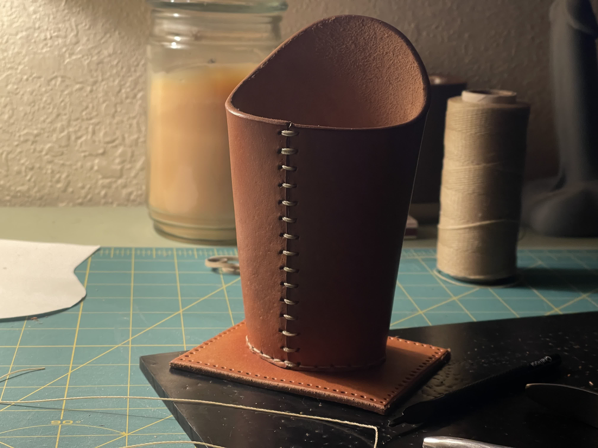
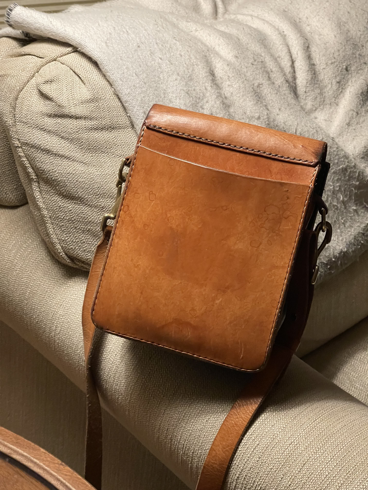
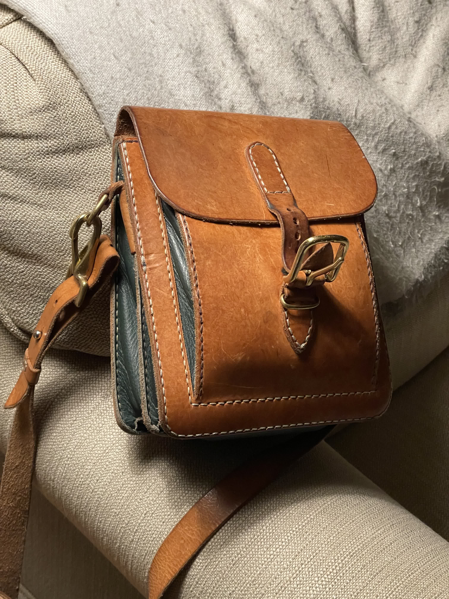
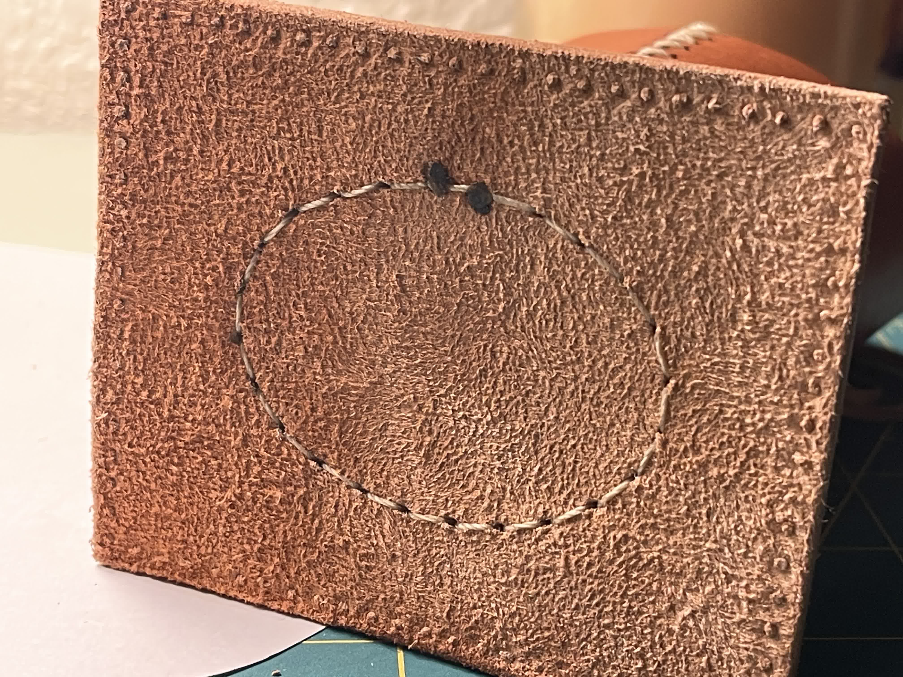
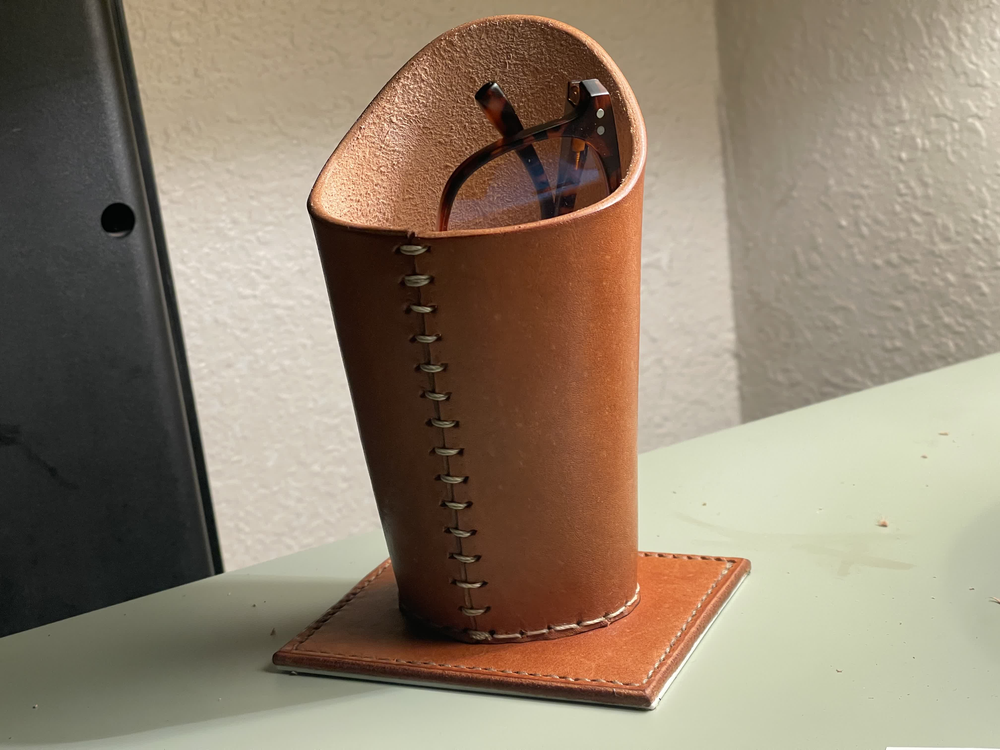

These leather projects started as gifts and practical builds, but they quickly turned into another place where my analog and digital habits started to overlap. They are smaller than the armor projects, but they still pull on the same instincts: silhouette, pattern logic, and a lot of care in the finish.


Process
The part I find most interesting here is the crossover with CAD. Fusion 360 became a way for me to work out templates and patterns that I could edit, scale, and refine before I ever cut into the leather. That made the process feel less like trial and error and more like building something I could actually repeat.
Lettering and decorative elements pushed that even further. A name or monogram might start as generated lettering, get cleaned up into an SVG, then move through CAD into a negative extrusion and finally into a 3D printed stencil for tooling. It is still hand work once I am at the bench, but the computer helps me front-load some of the precision.
Purse for Mom
This is one of the clearest examples of what I like about the leatherwork side of my projects: a handmade gift with a quiet, sturdy silhouette and just enough detail to feel personal. A lot of the appeal is in the shape, the edge work, and the way the leather catches light across the surface.


Eyeglass Holder
This project came from a reference image my mom sent me years earlier after seeing something similar in an antique store. By the time I finally made it, the idea had been sitting in the back of my head long enough that the whole build moved quickly: patterning, cutting, tooling, and assembly all landed in about two days.
It is a good example of these projects at their best. They start with a very practical object, then pick up just enough shape and finish to feel a little more special on a desk or nightstand.


Half Chaps
Half chaps belong here because they point toward another side of the work, one where leather is about fit, movement, and durability instead of desk objects or keepsakes. I like that overlap: patterning something functional, shaping it around a body, and making it sturdy enough to actually use.
I am keeping this section intentionally brief until I have the right photos in hand. Once I do, it can grow into a fuller case study about shaping, closures, and the overlap between leather craft and costume thinking.
What Comes Next
This part of the portfolio runs deeper than the few images I have ready today. I want the page to keep growing as I pull more leather projects forward, especially the pieces where tooling, fit, and CAD-assisted patterning start to overlap.